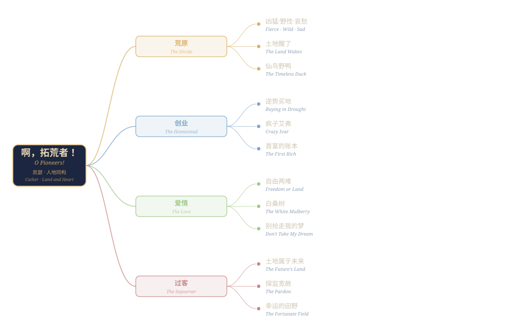

啊，拓荒者！
〇 · 书籍信息
基本信息
| 书名 | 《啊，拓荒者！》——人民文学出版社「蜂鸟文丛」版，卷首有密茨凯维支题词与卷首诗《草原之春》，卷末两部资中筠译序（1987 初译本序、1998 重版序） |
|---|---|
| 作者 | 薇拉·凯瑟（1873–1947），弗吉尼亚红云镇长大、内布拉斯加草原上目睹移民垦荒；1923 年获普利策奖——「内布拉斯加三部曲」之首即本册 |
| 译者 | 资中筠——国际政治与翻译双栖学者，1987 年初译、1998 年重版，两篇译序合观即是三十年译事的心史 |
| 体裁 | 拓荒史诗长篇（1913，五部：荒原／领土／冬忆／白桑树／亚历山德拉）——一部写土地的传记，一部写女当家人的创业史 |
| 一句话 | 荒原的凶猛与赤心的温柔在同一个人身上完成和解——「我们是这里的过客，而土地是长在的」 |
一 · 核心主题总览
五部正文之下，是四组互相咬合的母题：① 人与土地（创业史的底座）
从「凶猛的力量、野性的美和连绵不断的哀愁」到「它从沉睡中觉醒，舒展开来，真大、真富」——凯瑟把土地写成第一主角：荒原有脾气，也有心跳；不迁就它脾气的人最先出局，肯等它醒来的人先富起来。
② 自由与归属（卡尔的两难）
「我宁愿要你的自由而不要我的土地」对上「自由常常意味着哪里都不需要你」——土地（被需要）与自由（无牵绊）被摆成一对反向筹码：没有正确答案，只有先想清楚再选。
③ 悲剧与宽恕（白桑树下的枪声）
艾米与麦丽终结在醋意中的枪声里，亚历山德拉大病一场后专程探监：「我一定尽量设法使你得到宽赦」——凯瑟让宽恕发生在强者身上，因为只有强者才付得起宽恕的成本。
④ 过客与丰收（结尾的循环）
「我们是这里的过客，而土地是长在的」——全书在黄昏星下收束于「多么幸运的田野」：个人的一生被写进丰收的循环，死亡都在这个循环里转成了营养——你今天认真做的那件事，就是别人的「金黄的小麦」。
二 · 第一段 荒原 · 觉醒—— 凶猛 · 沉睡 · 仙鸟 ——
荒原的脾气
小说开篇的五英里风雪夜路上，捷克移民男孩卡尔与波希米亚女孩麦丽同行；凯瑟为内布拉斯加草原写下总纲：「这土地不愿有人来干扰它，它要保持它固有的凶猛的力量、野性的美和连绵不断的哀愁。」三个定语预告了全书三个对手：凶猛是干旱与死亡，野性是美与生机，哀愁是所有拓荒者共同的心事。
◆ 语言学习 · 环境 · 三定语
| 凶猛 | 旱灾与暴风雪——土地的第一张脸，赶走了一批又一批拓荒者 |
|---|---|
| 哀愁 | 移民的共同心事——瑞典人、捷克人、波希米亚人，各自乡音里同一个乡愁 |
土地醒了
十六岁的亚历山德拉在河边考察归来的黄昏，独自坐在自己地头的土丘上，看到春天的土地「忽然一下子自己工作起来了。它从沉睡中觉醒，舒展开来，真大、真富」。同一场春天，先领教荒原的凶猛，再领受土地的苏醒：恩与威同源，土地给什么都不白给。
◆ 语言学习 · 经营 · 苏醒
| 真大、真富 | 机会的定义式——「忽然一下子」：沉睡的资源醒来只对等它的人显形 |
|---|---|
| 地头土丘 | 独坐的位置——决策者与土地的对视点：全书最重要的一幕发生在无人处 |
第一张面向土地的脸
凯瑟最著名的抒情接在同一段落：「自从这块土地从地质纪元前的洪水中涌现出来以来，也许是第一次有一张人脸带着爱和渴望面向着它。」亚历山德拉「眼睛如痴如醉地饱览着这广阔无垠的土地，直到泪水模糊了视线」。地质纪元与人脸同框——她爱的东西太大，大到弟弟们读不懂；被嘲笑的痴望，常常是远见的胎动。
◆ 语言学习 · 抒情 · 同框
| 地质纪元 | 时间尺度的骤变——用亿年丈量一瞥：凯瑟把个人志业写成地质事件 |
|---|---|
| 泪目 | 远见的体征——痴望到流泪，是判断「这是不是你的事业」的土办法 |
三 · 第二段 拓荒 · 经营—— 三年大旱 · 抵押买地 · 疯子艾弗 ——
三年大旱与逆势买地
父亲病逝，二十岁的亚历山德拉接掌家业：弟弟罗、奥斯卡守旧求稳，她却在大旱第三年赴河边考察，回来力排众议抵押借款，买下林斯特伦姆家与克劳家放弃的地。荒年卖地者众、荒年买地者寡——逆周期的胆量来自观察：她看到的是土丘上的「真大、真富」，弟弟们看到的是口粮。
◆ 语言学习 · 决策 · 逆周期
| 抵押借款 | 创业史上最惊险的一步——孤女的信用押给了土地的觉醒 |
|---|---|
| 河边考察 | 决策的现场感——她不坐在灶前算账，骑马去看地：判断长在脚下 |
疯子艾弗
光着脚、住土坡窑洞、懂牲口、读挪威文《圣经》的「疯子」艾弗被村里人嘲笑；亚历山德拉替他说话：「艾弗是有一点儿古怪，不过他比我雇的工人里的一半都有头脑。」艾弗是她的精神知音：同样不按常理生活，同样被群体排斥——一个群体的审美边界，往往由它嘲笑谁划定。
◆ 语言学习 · 群体 · 边界
| 疯子 | 平庸的命名术——不合常模者先被命名，再被排除：命名即驱逐 |
|---|---|
| 挪威文《圣经》 | 不随俗的精神生活——光脚与读书同在一个人身上：凯瑟的辩证法 |
野鸭与最快乐的一天
大旱之年，亚历山德拉与幼弟艾米在河边峭壁上吃午餐，看见小湾里「一只单身的野鸭」独自游泳、潜水、整理羽毛，「像是一只不知年代、永不变化的仙鸟」——她称之为「一生最快乐的一天」。「孤单」被写成了「逍遥」：野鸭离群而自在，恰是她的镜像——幸福是一种与孤独和解的能力。
◆ 语言学习 · 意象 · 野鸭
| 单身野鸭 | 离群的自在者——多年后艾米还提起「我们的那只野鸭」：幸福以意象存档 |
|---|---|
| 不知年代 | 脱离时间轴的一刻——最像自己的下午，往往不是最热闹的 |
四 · 第三段 爱情 · 枪声—— 十六年 · 倾泻 · 金光 ——
自由的两难
从纽约归来的工程师卡尔自认一事无成，不愿以「食客」身份留下；亚历山德拉答：「我宁愿要你的自由而不要我的土地。」卡尔忧伤地摇头：「自由常常意味着哪里都不需要你。」土地与自由被摆成一对反向筹码：她用半生换来被需要，他用半生换来了无牵挂——隔着篱墙交换心事的清单。
◆ 语言学习 · 情感 · 反向筹码
| 食客 | 卡尔最怕的身份——爱而不能白住：自尊是这段爱情的汇率 |
|---|---|
| 篱墙 | 两人对话的位置——有墙才有对话的克制：凯瑟的抒情永远隔一道墙 |
倾泻的生命
艾米收到麦丽的口信，心急如焚地驰马穿过熟透的麦田——「他的生命沿途倾泻在奔向沙巴塔家农场的道路上。」他不知道，醋意中的弗兰克正揣着温彻斯特连发枪等在果园。一句「倾泻」把奔赴写成消耗与葬礼的合体：最灿烂的时刻与最危险的时刻是同一刻。
◆ 语言学习 · 悲剧 · 时间观
| 倾泻 | 生命力的亮烈与危险同体——古典悲剧的时间观：亮度调到最高的时刻风险最高 |
|---|---|
| 麦田 | 死亡发生地——丰收的意象与枪声同框：凯瑟的悲而不毁由此展开 |
果园之光
悲剧现场被写成光的盛宴：「果园里金光荡漾；光才是现实世界，而树木不过是用来反映和折射光线的间隔物。」枪声之后，倒卧的麦丽睁开「琥珀一般的眼睛」，对赶来的艾米说：「别抢走我的梦！」物质世界是「间隔物」，真正实在的是光——爱、梦、那一瞬的照面：全书的悲剧感不沉入血泊，而升进金光。
◆ 语言学习 · 哲学 · 光
| 间隔物 | 实体世界的降格——争执的实体（钱、房产、名分）多是间隔物 |
|---|---|
| 别抢走我的梦 | 麦丽的最后一句话——把梦放在死之前：凯瑟的人物学在临终一刻 |
五 · 第四段 落日 · 探监 · 田野—— 骑兵 · 宽赦 · 黄昏星 ——
教会与骑兵
阿梅代婚礼丰收、又骤然死于盲肠炎；葬礼与坚信礼恰好同日——「教会一向主张，生活是为生者而存在的」：一半人备丧，一半人备礼。清晨一班男孩骑马去迎主教：「多好的小伙子！我们教会仍旧有自己的骑兵。」凯瑟把悲与喜写成同一仪式的两面：死亡不是中断，而是生者秩序里的一个声部——悲而不毁。
◆ 语言学习 · 民俗 · 双仪式
| 生活是为生者而存在的 | 草原教会的实用主义——哀悼过成生活的一部分，而不是全部 |
|---|---|
| 骑兵 | 拓荒少年的荣誉——骑着马去领祝福：青春的仪式感长在马背上 |
探监
弟弟艾米惨死，凶手弗兰克被判十年；亚历山德拉大病一场后专程去州反省院，对崩溃的弗兰克握手立誓：「我一定尽量设法使你得到宽赦，不达目的绝不罢休。」归途她想起学生时代的两行诗：「而今往后世界于我／不过是广阔的囚牢……」她原谅了杀死弟弟的人——不是原谅暴力，而是认出「同一场风暴的受害者」；宽恕不是立场问题，是容量问题。
◆ 语言学习 · 道德 · 容量
| 不达目的绝不罢休 | 强者的承诺——宽恕的成本只有付得起的人开得了口 |
|---|---|
| 广阔的囚牢 | 归途的两行诗——人人都在囚牢里：认出这一点是宽恕的前提 |
幸运的田野
全书在黄昏星下收束：「多么幸运的田野！它终于敞开胸怀接受了像亚历山德拉那样的颗颗赤心，然后又把它们奉献给人间——在金黄的小麦里，在沙沙作响的玉米里，在青春闪亮的眼睛里。」卡尔从阿拉斯加星夜赶回，两人订定终身。开篇的荒原句正式反转：凶猛、野性、哀愁的土地，最终收下了赤心，并以丰收的形式「奉献给人间」。
◆ 语言学习 · 结构 · 反转
| 颗颗赤心 | 拓荒者的完整定义——把心交给一片土地，接受它以看不见的方式回流 |
|---|---|
| 青春闪亮的眼睛 | 丰收的终点是人——小麦、玉米、眼睛：凯瑟的清单最后落在人身上 |
六 · 人物图鉴与成长弧线—— 主角配角 · 一张表看穿 ——
主要人物
亚历山德拉·柏格森——瑞典移民孤女——二十岁接掌家业，大旱之年逆势买地终成首富：草原的当家人
卡尔·林斯特伦姆——邻家男孩、归来工程师——「自由常常意味着哪里都不需要你」：漂泊者的清醒
艾米——幼弟——被娇宠、与麦丽相爱、死于白桑树下：全书悲剧的中心
次要人物（功能位）
| 麦丽·沙巴塔 | 波希米亚少妇——快活热情，「别抢走我的梦」：悲剧里最亮的人 |
|---|---|
| 弗兰克·沙巴塔 | 麦丽的丈夫——醋意中的凶手，判十年后获宽赦之诺 |
| 罗与奥斯卡 | 两个哥哥——平庸守旧的代表，以「图你财产」驱逐卡尔 |
| 艾弗 | 「疯子」——光脚、懂牲口、读挪威文《圣经》的精神知音 |
| 阿梅代 | 法国邻居——婚礼与丰收、骤然死于盲肠炎：悲喜同日的引子 |
七 · 主题与象征—— 每个道具都在说话 ——
| 荒原 | 土地的第一张脸——凶猛、野性、哀愁 |
|---|---|
| 野鸭 | 孤单的自在——「不知年代、永不变化的仙鸟」 |
| 白桑树 | 爱情的祭坛——野合与枪声同地：美与毁灭同枝 |
| 光 | 果园里的实在——树木只是间隔物 |
| 黄昏星 | 结尾的坐标——订定终身的时刻表 |
| 骑兵 | 拓荒少年的荣誉——教会仍旧有自己的骑兵 |
八 · 写作手法赏析—— 怎么写，就能怎么学 ——
① 人地同构
土地的脾气与人的性格互相解释——环境是第一主角，不是背景。
② 五部双线
亚历山德拉的创业线与艾米—麦丽的爱情线并行——冷线成事，热线成殇。
③ 光的技术
把死亡放进金光里写——悲剧感不沉入血泊而升进金光：哀愁被美接管。
④ 首尾反转
开篇「凶猛的荒原」到结尾「幸运的田野」——同一片地的两张脸：结构即主题。
九 · 名段欣赏—— 原文精读 · 逐段赏析 ——
十 · 金句摘录—— 12 条 · 中英对照 · 带出处 ——
"这土地不愿有人来干扰它，它要保持它固有的凶猛的力量、野性的美和连绵不断的哀愁。"—— 第一部 · 荒原
"忽然一下子自己工作起来了。它从沉睡中觉醒，舒展开来，真大、真富。"—— 第一部 · 觉醒
"也许是第一次有一张人脸带着爱和渴望面向着它。"—— 第一部 · 洪荒句
"像是一只不知年代、永不变化的仙鸟。"—— 第四部 · 野鸭
"我宁愿要你的自由而不要我的土地。"—— 第四部 · 两难
"自由常常意味着哪里都不需要你。"—— 第四部 · 卡尔
"教会一向主张，生活是为生者而存在的。"—— 第五部 · 双仪式
"多好的小伙子！我们教会仍旧有自己的骑兵。"—— 第五部 · 骑兵
"他的生命沿途倾泻在奔向沙巴塔家农场的道路上。"—— 第五部 · 倾泻
"光才是现实世界，而树木不过是用来反映和折射光线的间隔物。"—— 第五部 · 果园之光
"我们是这里的过客，而土地是长在的。"—— 第五部 · 落日
"多么幸运的田野！"—— 第五部 · 结尾
十一 · 拓展阅读—— 原文 · 词条 · 译文 ——
原文与文本
- O Pioneers! — Wikipedia —— 1913 年出版背景、「内布拉斯加三部曲」与书名出处
- Willa Cather — Wikipedia —— 红云镇、草原与《我的安东尼娅》的完整脉络
主题与延伸
- Homestead Acts — Wikipedia —— 《宅地法》与拓荒时代的土地制度
- Sarah Orne Jewett — Wikipedia —— 献辞对象与「乡村写实」传统
十二 · 个人感悟与心得—— 三点心得 ——
荒原 · 白桑树 · 黄昏星
① 先摸清脾气，再谈开垦
荒原的三个定语是全书的课程表——进入任何新领域，先摸清它的「脾气」：不迁就它脾气的人最先出局，肯等它醒来的人先富起来。
② 自由与归属，先想清再选
「我宁愿要你的自由而不要我的土地」对上「自由常常意味着哪里都不需要你」——择业与定居的底层问题正是这道题：最怕的是两头都想要，两头都没想。
③ 过客哲学治焦虑
「我们是这里的过客，而土地是长在的」——房子、职位、资产都写着你的名字，但都「长在」而你不长在：做过真正爱它、懂它的主人一刻，就已经是它的主人了。
—— 凯瑟死于 1947 年 4 月 24 日，纽约。她在生前嘱人销毁未刊书信，只让作品替她说话；这片内布拉斯加的田野，至今仍在「沙沙作响的玉米里」替她回答。
十三 · 一页速查（复习用）
| 全书骨架 | 五部：荒原（立威）→领土（创业）→冬忆（六年空白）→白桑树（爱情与枪声）→亚历山德拉（宽恕与收束） |
|---|---|
| 核心命题 | 人与土地；自由与归属；悲剧与宽恕；过客与丰收 |
| 必读篇目 | 第一部（荒原）→ 第四部第 6 章（自由两难）→ 第五部（果园之光与结尾） |
| 三大符号 | 荒原（脾气）· 白桑树（祭坛）· 黄昏星（坐标） |
| 一句话总结 | 凯瑟一生都在写土地与人的互相成全——她从不渲染成功，只记录赤心如何在荒原上醒来 |
十四 · 全书思维导图—— 一图纵览 ——

一图纵览全书骨架 · 中英双语对照 · 手机端可左右滑动查看全图